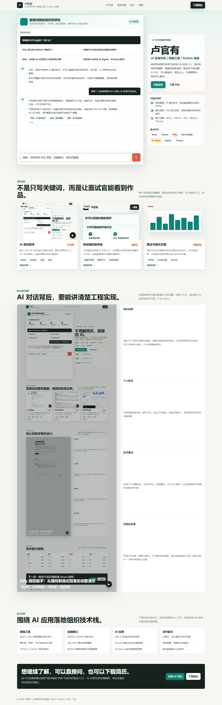

核心项目 ▶
直接问我的简历和项目
支持追问项目细节、技术栈、岗位匹配度，回答会带上可验证材料。
面试官常问
项目证据
不是只写关键词，而是让面试官能看到作品。
每个项目都对应截图、职责边界和技术说明；AI 对话给入口，项目材料负责增强可信度。
核心项目拆解
AI 对话背后，要能讲清楚工程实现。
这里回答技术面试官最关心的问题：你做了什么、难点是什么、如何证明它不是一个空 Demo。
能力范围
围绕 AI 应用落地组织技术栈。
不用百分比自评分，改成“能承担什么工作”，更适合给 HR 和技术面试官快速判断。
前端工程
React / Vite 页面搭建与组件拆分
聊天框、表单、卡片和响应式布局
Three.js / Canvas 可视化表达
后端接口
Python / FastAPI 接口设计
Dify API 代理与密钥隔离
MySQL 数据和媒体元信息管理
AI 应用
Dify 工作流和知识库问答
Prompt 编排与岗位匹配回答
AI Agent 业务流程落地思路
交付能力
从需求、设计稿到可访问页面
项目截图、视频和文档组织
移动端适配与上线迭代